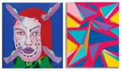

The Path To Nowhere
Oliva Gallery presents The Path to Nowhere, a two-person exhibition bringing together Errol Ortiz and Stanley Dean Edwards.
The exhibition sets up a direct exchange between two artistic approaches that operate by entirely different logics, yet arrive at a shared sense of suspension. Errol Ortiz (b. 1941), a Chicago-based Imagist painter whose work is deeply influenced by current events and social movements, builds images that read quickly but balance on a tightrope of uneasiness and whimsy. Faces, symbols, and patterned forms flatten, stack, and echo across the surface, pulling from a range of sources while redirecting them into something sharper, stranger, and more pointed.
That visual language carries the force of Ortiz’s broader history. After spending six months in Mexico in 1963, he returned to Chicago and became involved with the Chicago Imagists, a group of artists brought together by curator Don Baum. Like many in the Imagist movement, Ortiz’s style incorporates elements of comic books, puzzles, and pop culture, blending bold visuals with socially charged themes. In 2015, the National Museum of Mexican Art hosted his first-ever solo museum exhibition, De vuelta: Works by Chicago Imagist Errol Ortiz, highlighting his contributions to the movement and his distinctive artistic voice.
Stanley Dean Edwards (b. 1945), an American artist renowned for his abstract paintings, characterized by bold geometric forms and a vibrant exploration of color, works through constraint. His paintings are constructed from hard divisions, calibrated color, and repeated structural decisions that lock each composition into place. Within that order, tension accumulates. The surfaces hold a steady precision, where equilibrium is continually tested rather than secured.
Edwards earned his BFA from the School of the Art Institute of Chicago in 1967 and has since established a distinguished career in geometric abstraction. Together, Ortiz lets images slip and scatter while Edwards locks them into pressure, meeting in a charged space that stays unsettled though shockingly cohesive.